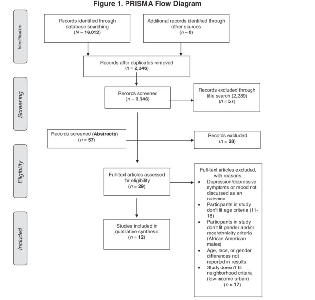

10. Synthesis: visualisations
This session will introduce common ways in which systematic review and map results can be visualised. Visualisations will be described that help to display the methods used in the review, the nature of the evidence identified, the results of assessments of relevance and validity, and any synthesis of study findings. Specific examples will include flow diagrams, evidence atlases, heat maps, pivot tables/charts, and forest plots. The session will include a practical exercise trying out some recent developments in software for visualising systematic review and map outputs.
Learning objectives:
- To understand the importance of visualisations in systematic reviews and maps
- To be able to interpret and know how to reproduce common types of evidence visualisations
- To be aware of examples of specific software for visualising evidence
To begin, watch the following presentation:
You can find the lecture handouts here.
Next, read the results section of the following systematic review on grazing impacts in temperate and boreal protected forests, paying close attention to the visualisations:
In addition, if you're interested in meta-analysis and quantitative synthesis, you may want to check out this paper on visualising meta-analyses:
Practical exercise
In this practical, you will take a look at several different forms of data visualisation and gain hands-on experience producing an interactive evidence atlas.
Flow diagrams
One of the most informative ways of describing the methods used in your systematic review or map and the fate of the evidence you identified is a flow diagram. Review flow diagrams detail the volume of evidence proceeding through each stage of the review process so taht the reader can easily understand the main methods used, how much research was identified, and how much was retained in the final synthesis. Here's an example of a flow diagram that conforms to the PRISMA reporting standard (click on the image to see the review it came from).
Descriptive plots
Databases
Heat maps
Evidence atlases
Software
Move to the next module!